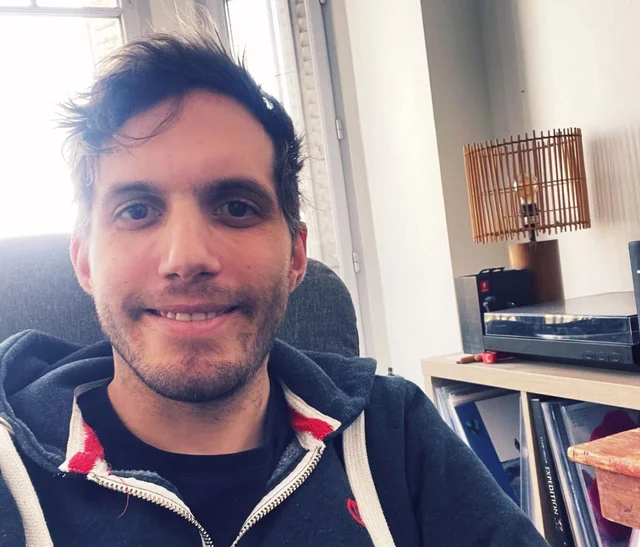

Hi, I'm Ronan Benec'h, a UX / Product Designer specializing in simplifying complex systems.
For over 9 years, I've helped teams make user journeys clearer, more efficient, and genuinely useful for their users:
- • Complex tools (B2B, internal tools), with a strong focus on digital accessibility
- • Optimizing user journeys and solving business problems
- • Experience: large corporations, startups, freelance work, agencies and IT consulting firms
- • Collaboration: Product Owners, Product Managers, front-end and back-end developers, designers, business teams and QA specialists — I enjoy working across disciplines
- • Activities: user research, co-design, prototyping, user testing, acceptance testing and development support
- • Industries: insurance, education, automotive, real estate, public services